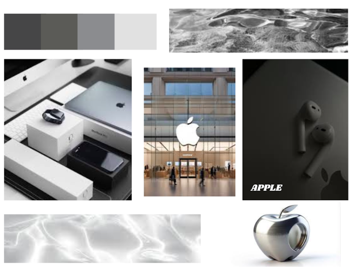
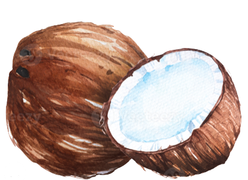
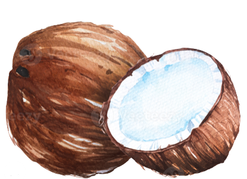
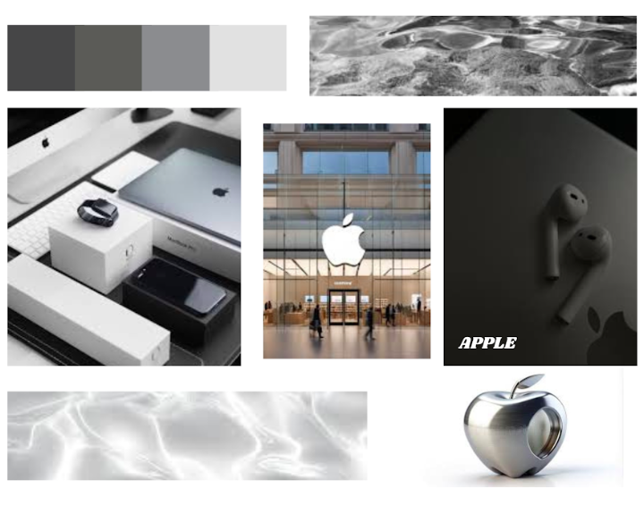

Visual Storytelling

Name Project

Logos

Scavenger Hunt

Moodboard
 

Throughout the course of Digital Media, I, as a freshman at Eleanor Roosevelt High School, have completed several projects that will be showcased down below. (Hover over them!)
Visual Storytelling
Name Project
Logos
Scavenger Hunt
Moodboard
During Digital Media this year, I was able to meet so many new people, work on so many different projects, and learn so many technology based skills. I am so glad to be able to look at my past work and see my reflected effort. I'm really glad to be able to say that Mr. Zeng has helped me a tremendous amount of times whenever I was stuck on my projects, and I am mostly glad to look back and realize how much fun I've had in this class using cameras, Adobe, computers, GMetrix, etc.